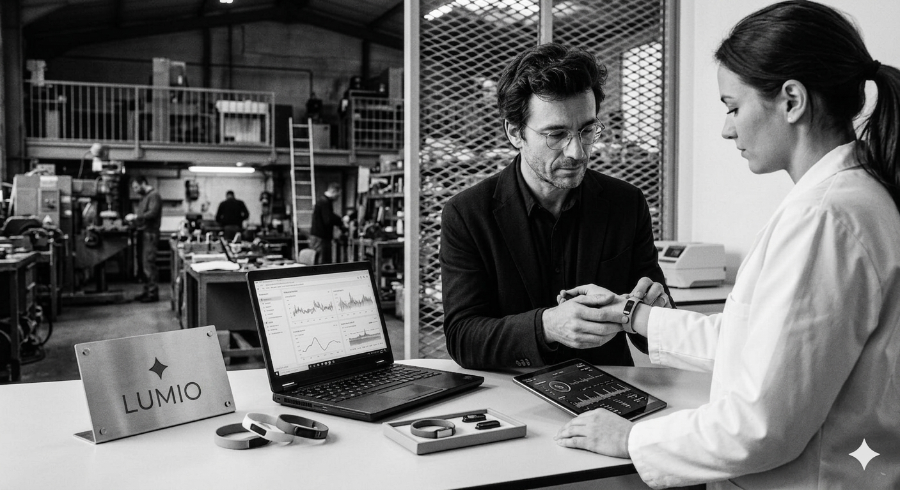

Il y a une photographie, quelque part dans les bureaux de Lumio Health rue de la Roquette, qui montre cinq personnes autour d'une planche de cuisine reconvertie en bureau. C'était l'hiver 2018. Théo Marczak avait 32 ans, un prototype de patch biosensoriel cousu à la main, et une conviction que les médecins du travail allaient finir par avoir besoin de lui. Deux des personnes sur la photo travaillent encore chez Lumio. Les trois autres sont passées à autre chose — ou presque. « On ne s'est jamais vraiment perdus de vue », dit-il avec une discrétion qui n'invite pas à approfondir.
Sept ans plus tard, Lumio Health compte une quarantaine de salariés, 180 entreprises clientes — du groupe hôtelier aux PME industrielles — et un chiffre d'affaires de 3,2 millions d'euros sur l'exercice 2024. Des chiffres corrects pour une medtech B2B à ce stade. Pas spectaculaires. Marczak le sait et ne s'en défend pas : « Ce secteur ne récompense pas la vitesse. Il récompense la crédibilité. »
Diplômé de l'École Centrale de Nantes en 2008, Marczak n'a jamais envisagé la santé comme terrain d'atterrissage naturel. Son premier poste est dans l'instrumentation industrielle — capteurs de pression, systèmes embarqués. « Je mesurais des machines. Et un jour j'ai réalisé que le corps humain était aussi une machine, et qu'on la mesurait très mal. » La formule est rodée, il l'a probablement dite cent fois. Elle n'en est pas moins vraie.
L'idée du patch germe en 2015, lors d'un passage dans un programme d'intrapreneuriat chez un équipementier industriel. Marczak lit alors beaucoup sur la variabilité de la fréquence cardiaque comme marqueur du stress autonome — un domaine de recherche sérieux mais encore peu exploité en médecine du travail. « Les chercheurs avaient les données. Les entreprises avaient le problème. Personne n'avait construit le pont. »
Il quitte son employeur en 2017, passe plusieurs mois à valider des hypothèses avec l'aide de quelques proches dont il parle peu — des personnes qui ont cru au projet très tôt, à une époque où il n'y avait strictement rien à montrer à part des tableaux Excel et un enthousiasme difficile à quantifier. Lumio est créée officiellement en janvier 2018.
Lumio Health compte une vingtaine de clients en mars 2020. Le confinement change tout — pas de façon linéaire, pas immédiatement, mais de façon durable. « Le premier mois, on a failli ne pas survivre. Nos déploiements terrains étaient suspendus, les entreprises ne pensaient qu'à leur continuité opérationnelle. » Puis quelque chose bascule. Les DRH, confrontés à une vague d'anxiété et d'épuisement sans précédent dans leurs effectifs, cherchent des outils. N'importe quoi de crédible, de mesurable, qui ne ressemble pas à un programme de yoga d'entreprise.
Lumio se retrouve avec un produit qui répond exactement à ce moment. La croissance est forte entre 2020 et 2022 — les 100 premiers clients sont signés en dix-huit mois. Marczak est le premier à reconnaître que cette période a aussi créé des fragilités : « On a grandi vite sans toujours choisir nos clients. On a dit oui à des déploiements qu'on n'était pas sûrs de bien servir. C'est un apprentissage. »
Ce que la vague post-COVID laisse derrière elle, en revanche, est précieux : un historique de données de stress sur plusieurs années, cross-sectoriel, que Lumio est la seule à posséder à cette échelle en France. « C'est notre vrai actif », répète Marczak. « Pas le patch. Le patch, n'importe qui peut le fabriquer. »
Fin 2023, deux concurrents directs — Biostream et Neuroflow — obtiennent leur certification MDR classe IIa auprès des autorités européennes. Le changement de statut est symbolique autant que réglementaire : un dispositif médical certifié peut être prescrit, remboursé, référencé dans les marchés publics de santé au travail. Pour les DRH des grands comptes, c'est une ligne de démarcation qui commence à compter.
Marczak est entré dans la procédure MDR. Il n'indique pas de calendrier. « Ces procédures sont ce qu'elles sont. Je préfère ne pas annoncer de date et la tenir, plutôt qu'annoncer une date et la rater. » La formulation est prudente. Elle dit aussi autre chose : qu'il y a une pression sur ce calendrier qu'il ne contrôle pas entièrement.
En attendant, Lumio vient d'accueillir au capital Northgate Capital, un fonds spécialisé dans la healthtech européenne, et une directrice marketing recrutée spécifiquement pour préparer l'entreprise à une phase nouvelle. Laquelle, exactement ? Marczak sourit. « Une phase où on arrête de chuchoter et où on commence à parler. » Ce que ça signifie concrètement pour la direction de la marque — B2B renforcé, B2C, les deux à la fois — il ne le dit pas. Pas encore.

Bureaux Lumio Health, Paris 11e
© L'Usine Digitale / D. Kauffmann
Théo Marczak dans les locaux de Lumio Health, rue de la Roquette. La startup occupe le 2e étage depuis 2021.